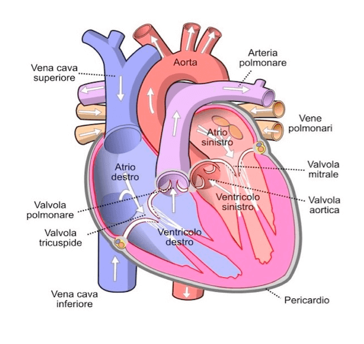
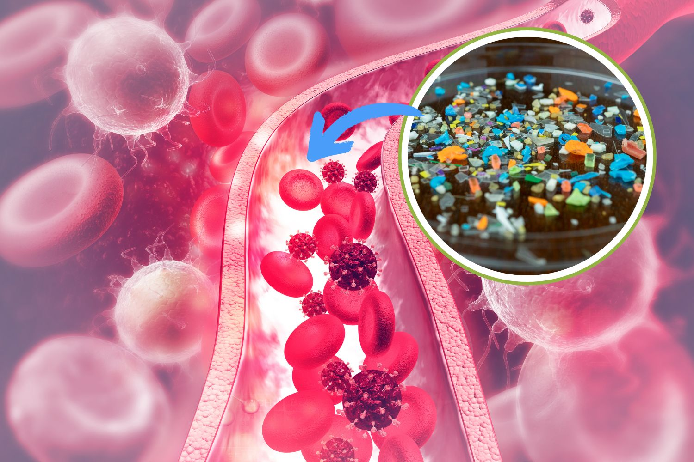
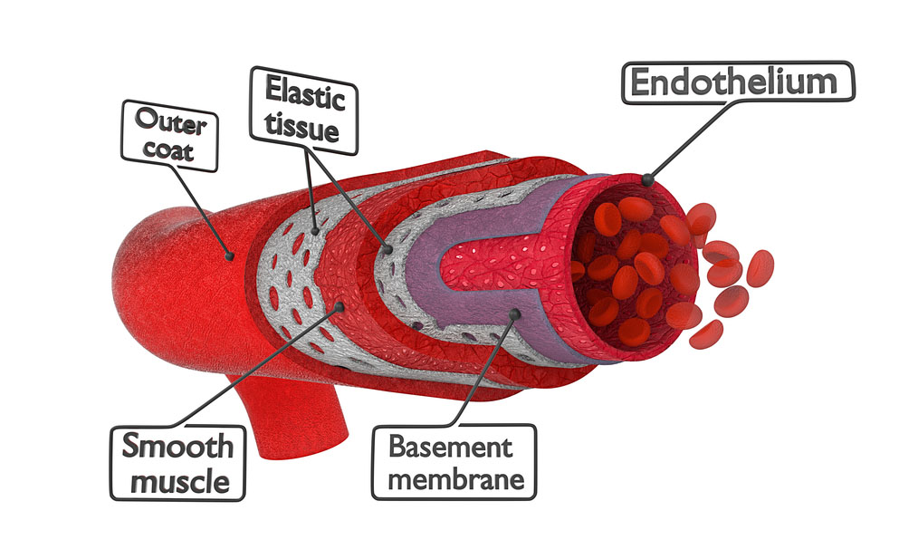

Una volta entrate nell’organismo umano, le microplastiche possono raggiungere il sistema circolatorio, dando origine a una serie di interazioni complesse con il sangue e con i vasi sanguigni. Questo aspetto è particolarmente rilevante dal punto di vista scientifico, poiché il sistema cardiovascolare rappresenta una via di distribuzione verso tutti gli organi e i tessuti.

Studi recenti hanno dimostrato la presenza di microplastiche nel sangue umano, indicando che particelle di dimensioni molto ridotte (soprattutto nanoplastiche) sono in grado di attraversare barriere biologiche come l’epitelio intestinale e quello alveolare. Una volta entrate nel circolo sanguigno, queste particelle possono:

Nel sistema circolatorio, le microplastiche possono influenzare diversi elementi cellulari e funzionali.
L’endotelio è il rivestimento interno dei vasi sanguigni ed è fondamentale per il mantenimento dell’equilibrio vascolare. Le microplastiche possono:

Questo tipo di danno è spesso associato allo sviluppo dell’aterosclerosi, una condizione caratterizzata dall’accumulo di placche lipidiche nelle arterie.
Uno dei principali meccanismi attraverso cui le microplastiche influenzano il sistema circolatorio è lo stress ossidativo. Le particelle possono indurre la produzione di specie reattive dell’ossigeno (ROS), che:
Questi processi sono strettamente collegati allo sviluppo di patologie cardiovascolari.
Le microplastiche non sono semplicemente particelle inerti: possono trasportare sostanze chimiche pericolose, tra cui:
Nel sangue, queste sostanze possono essere rilasciate gradualmente, amplificando gli effetti tossici e contribuendo a disfunzioni sistemiche.
Sebbene la ricerca sia ancora in corso, le evidenze disponibili suggeriscono che la presenza di microplastiche nel sistema circolatorio possa contribuire a: